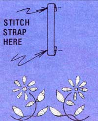
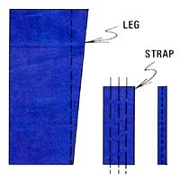
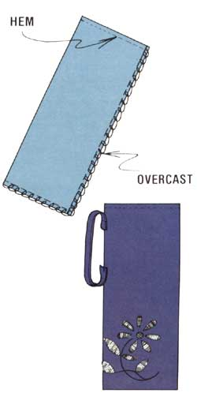

I'd be embarrassed to say just how many Thermos bottles I've dropped and destroyed over the course of the years. And I've often wondered why more of these insulated drink containers don't come with their own handles. Eventually, however, I came up with my own solution to that little oversight ... an attractive carrier made from old jeans. In fact, merely one leg of a pair of discarded denims will do the job!
First, fit your Thermos bottle inside the leg (loosely) and cut away the excess length and width, making sure you allow enough material for a seam. (At this point, you can personalize your creation-to-be with an applique' or embroidery ... see the article on page 92 for tips.) Next, cut a 2" X 10" piece of material (for a strap) and fold it, lengthwise, into fourths, enclosing the raw edges. Then stitch down the folds ... attach the strap to the carrier as shown ... and sew it firmly in place.
Now, it's time to sew the seams along the side and bottom. (Restitch the bottom for extra strength, and overcast all seams so the sack can be tossed into the washing machine without raveling.) Finally, hem the top edge ... and you're all set, with a tough little carrier that can go anywhere you go (with little chance of mishap).
|
 |
 |
 |